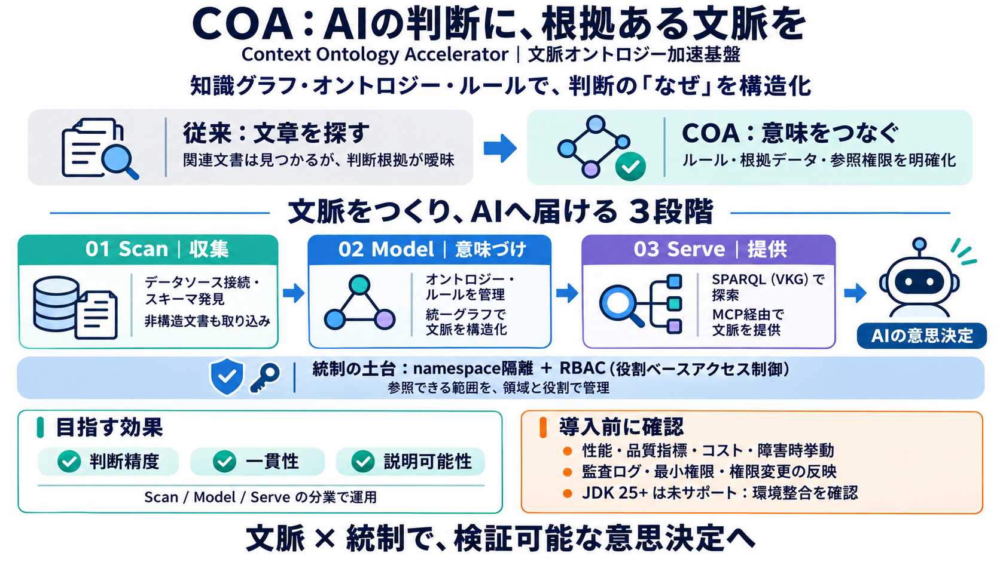

context-ontology-accelerator/README.md at main · aws/context-ontology-accelerator · GitHub
## Architecture The system follows a Scan → Model → Serve workflow: Scan — Connect data sources, discover schemas, en…

## Architecture The system follows a Scan → Model → Serve workflow: Scan — Connect data sources, discover schemas, en…
- Scan — Connect data sources, discover schemas, enrich metadata, ingest unstructured documents - Model — Induce and man…
- Select the query strategy per request. REST and MCP requests can optionally set a `strategy` for a structured query — …
Context Ontology Accelerator turns your structured and unstructured data into a governed semantic layer, then uses that …
Context Ontology Accelerator is an open-source semantic context layer for AWS that gives AI agents governed, explainable…